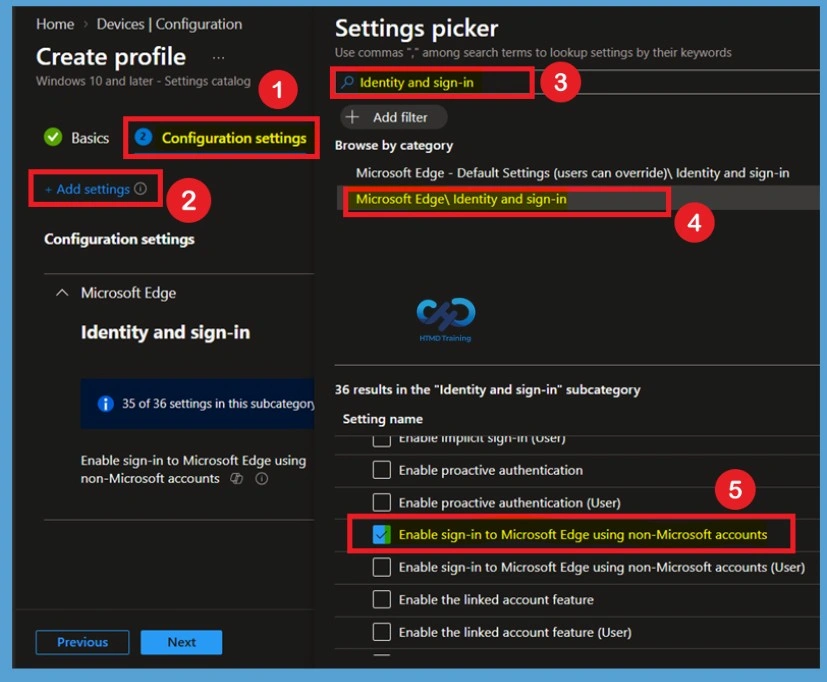
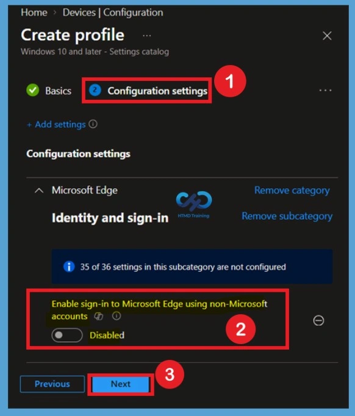
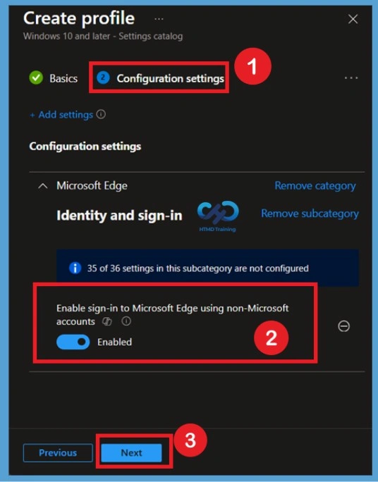

Key Takeaways
- Control whether users can sign in to Microsoft Edge using non-Microsoft accounts such as Google and Apple.
- Hide and disable all non-Microsoft account sign-in options while continuing to allow Microsoft account sign-in.
- Help organizations enforce a Microsoft account-only sign-in experience on managed Microsoft Edge browsers.
- Ensure users continue to sign in with Microsoft accounts while restricting alternative account options.
In this post we are discussing, Configure Microsoft Edge Non-Microsoft Account Sign-in to Manage Browser Authentication using Intune. Microsoft recently introduced the ability for users to sign in to Microsoft Edge with supported non-Microsoft accounts, such as Google and Apple accounts, where the feature is available. To help organizations manage this capability, Microsoft provides a policy that allows administrators to control whether non-Microsoft account sign-in is permitted on managed devices.
Table of Contents
Configure Microsoft Edge Non-Microsoft Account Sign-in to Manage Browser Authentication using Intune
Using Microsoft Intune, administrators can configure this policy to either allow or restrict sign-in with non-Microsoft accounts in Microsoft Edge. When the policy is enabled or left unconfigured, users can sign in with supported Google or Apple accounts, and the corresponding sign-in options are displayed within the browser. This capability provides users with additional sign-in options while using the Microsoft Edge browser.
Organizations that manage Microsoft Edge on corporate devices may want to control whether users can access the browser using non-Microsoft accounts. Restricting these sign-in methods can help ensure a more consistent authentication experience and align with organizational identity management policies.
| What’s New in Microsoft Edge |
|---|
| Microsoft Edge now supports sign-in with non-Microsoft accounts, such as Google and Apple accounts, where the feature is available. Administrators can use this policy to allow or block non-Microsoft account sign-in on managed devices while continuing to support Microsoft account sign-in. |
Configure Non-Microsoft Accounts Policy in Intune
The Configure Non-Microsoft Account Sign-in Policy in Intune setting allows administrators to manage whether users can sign in to Microsoft Edge using supported non-Microsoft accounts, such as Google and Apple accounts. For policy deployment Sign in to the Microsoft Intune Admin Center. Select Devices > Windows > Configuration profiles > Create profile.
After filling the basic details now, you have to Configure the Allow Sign in to Microsoft Edge with Non-Microsoft Accounts policy based on your organization’s requirements. For that click on the Add settings option in Configuration settings and search Identity and sign-in and select the Enable sign-in to Microsoft Edge using non-Microsoft accounts policy from Microsoft Edge\ Identity and sign-in the category.

Defaulted state of policy
Close the Settings picker window after selecting the policy. You can then see that the Allow Sign in to Microsoft Edge with Non-Microsoft Accounts policy is Disabled by default. When this policy is set to Disabled, users cannot sign in to Microsoft Edge using supported non-Microsoft accounts, such as Google or Apple accounts. All related non-Microsoft account sign-in options are hidden and disabled, while Microsoft account sign-in continues to remain available.

Enable sign-in to Microsoft Edge using non-Microsoft
To enable the policy, move the toggle from Disabled to Enabled. Once enabled, the Allow Sign in to Microsoft Edge with Non-Microsoft Accounts policy allows users to sign in to Microsoft Edge using supported non-Microsoft accounts. When this policy is Enabled, users can sign in to Microsoft Edge with supported non-Microsoft accounts, such as Google or Apple accounts, where the feature is available.
- The corresponding non-Microsoft account sign-in options are displayed within the Microsoft Edge interface, allowing users to authenticate using these supported accounts.

Need Further Assistance or Have Technical Questions?
Join the LinkedIn Page and Telegram group to get the latest step-by-step guides and news updates. Join our Meetup Page to participate in User group meetings. Also, join the WhatsApp Community and the WhatsApp channel to get the latest news on Microsoft Technologies. We are there on Reddit as well
Author
Anoop C Nair has been Microsoft MVP from 2015 onwards for 10 consecutive years! He is a Workplace Solution Architect with more than 22+ years of experience in Workplace technologies. He is also a Blogger, Speaker, and Local User Group Community leader. His primary focus is on Device Management technologies like SCCM and Intune. He writes about technologies like Intune, SCCM, Windows, Cloud PC, Windows, Entra, Microsoft Security, Career, etc